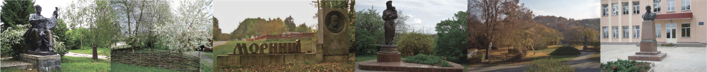

Поет , прозаїк

Моринці - світ наш високий,
Рідне Тараса село.
Моринці - світ мій широкий,
Роду мого джерело.
А. Самойленко
Поет , прозаїк
За пазухою в Бога не сидів,
Народився 5 травня 1938 року
Член Національної спілки письменників України з 2013 року Лауреат премії Міжнародного конкурсу сучасної української пісні "Українська ліра" імені Георгія Кузовкова в номінації "Кращий текст пісні" (м.Санкт-Петербург, 2012 р.). Самойленко А.П. Романс «Осінні покоси» (музика Валер'яна Стратуци) посів перше місце. Лауреат Всеукраїнського конкурсу сучасної української пісні в м. Черкаси (2012 р.). Самойленко А.П. Пісня «Віра, надія, любов» (музика Володимира Хорта) удостоєна першого місця. Лауреат конкурсу «200 років від дня народження Т.Г.Шевченка»(текст пісні "Україна,свята Україна!" ),(м.Черкаси). Дипломант Черкаської обласної організації Національної Всеукраїнської музичної спілки. Член Черкаського земляцтва "Шевченків край" та Чернігівського земляцтва в м.Києві. Співпрацює з Чернігівською газетою «Отчий поріг»